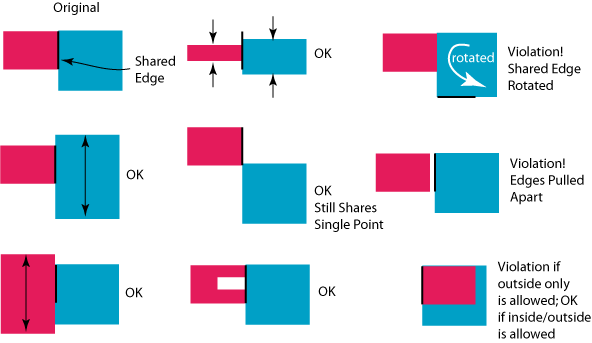

|
 |
 |
||||||
|
|
|
||||||
The built-in layer pair constraint, oacKeepAlignedShapes, specifies that shapes on two layers that have coincident edges must maintain coincident edges. Constraint parameters further define whether the coincident edges of the shape on one layer must be inside, outside, or either inside or outside the shape on the second layer. The length of the shared edge can change as long as the shapes maintain at least one shared point on the shared edge.
If an application ignores this constraint, and separates two shapes that have shared edges, other applications will not be able to enforce the constraint on those two shapes. If an application moves a shape on one layer so that it shares an edge with a shape on the other layer specified by the constraint, those two shapes are subject to the constraint. This constraint can be applied to any two oaShapes on the specified two layers, but the semantics are only meaningful for shapes that have a straight edge; these include rects, some polygons, paths, path segments, lines, and dots.
| Constraint type: | oaLayerPairConstraint (Symmetric: yes) |
| Value types: | oaBooleanValue |
| Database types: | oaDesign, oaTech |
| Object types: | oaAppObject |
The following value types are supported by this constraint:
This value indicates that shared edges of shapes and boundaries must remain shared. The value of this oaBooleanValue class object must be true and it must not be used to turn off this constraint.
Units: Boolean
The following parameters are supported by this constraint:
| Name | Value Type | Units | Default | Description | ||||||||
|---|---|---|---|---|---|---|---|---|---|---|---|---|
| alignmentType oacAlignmentTypeConstraintParamType |
oaIntValue | Enum | insideOutside |
The oacKeepAlignedShapes constraint has an oaIntValue parameter of type oacAlignmentTypeConstraintParamType that represents the alignment of the shapes. This parameter is represented by an oaAlignmentType enumeration:
|

Copyright 2002 - 2010 Cadence Design Systems, Inc.
All rights reserved.